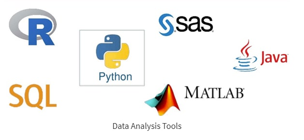

Трішки загального
Що таке Аналіз Даних?
Аналіз даних - процес очищення, перетворення та моделювання даних для виявлення корисної інформації та прийняття рішень. Метою аналізу даних є отримання корисної інформації і прийняття рішення на основі аналізу.
Простий приклад аналізу даних: щоразу, коли ми приймаємо будь-яке рішення в нашому повсякденному житті, ми думаємо про те, що сталося минулого разу або що станеться, вибравши це конкретне рішення. Це не що інше, як аналіз нашого минулого чи майбутнього та прийняття рішень на його основі. Для цього ми збираємо спогади про наше минуле або мріємо про наше майбутнє. Тож це і є аналіз даних.
Чому Аналіз Даних?
Щоб розвивати свою справу, або навіть покращувати життя, іноді все, що нам потрібно зробити, це проаналізувати, вже зібрані дані!
Інструменти аналізу даних:

Наступні 7 кроків зазвичай виконують, щоб проаналізувати дані:
Визначення цілей. Визначення чітких цілей допоможе з вибором типу даних для збору та аналізу.
Інтегрування інструментів для аналізу даних. Ці інструменти можна інтегрувати через API.
Збір даних. Потрібно зібрати всі дані в одному місці, щоб їх можна було проаналізувати. Як кількісні, так і якісні дані часто зберігають в Excel.
Очистка даних. Щоб отримати точні результати, потрібно очистити дані перед аналізом.
Аналіз даних.
Висновки. Потрібно глибоко зануритися в дані, щоб отримати корисну інформацію. Потім інтерпретувати результати, щоб визначити найкращі варіанти дій.
Візуалізація. Необхідно представити результати в зрозумілій для всіх формі. Зазвичай використовують графіки, карти, діаграми, маркери та інші методи представлення інформації.